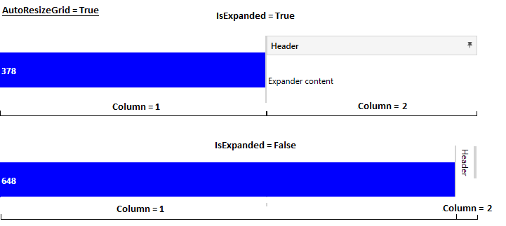

This is simple expander with ability to auto resize grid and accent color.
Inherits from System.Windows.Controls.HeaderedContentControl.

Properties
| Property name | Description |
|---|---|
| AccentColorBrush | Gets or sets accent color |
| AutoResizeGrid | Gets or sets whether Grid column/row on which Expander is located will be auto resized to fit expander content. |
| IsExpanded | Gets or sets whether the Expander content window is visible. |
| ExpandDirection | Gets or sets expand direction (Down, Up, Left or Right). |
How to use
User must manualy create ControlTemplate for expander or use predefined ExpandLeftStyle from Orc.Controls library.
The example below shows how to use Expander control with AutoResizeGrid enabled.
<Grid x:Name="Grid">
<Grid.ColumnDefinitions>
<ColumnDefinition Width="*" />
<ColumnDefinition Width="Auto" />
<ColumnDefinition Width="300" />
</Grid.ColumnDefinitions>
<Rectangle x:Name="Rect"
Fill="Blue"
Height="50"
VerticalAlignment="Center"
HorizontalAlignment="Stretch"/>
<TextBlock Text="{Binding ElementName=Rect, Path=ActualWidth}"
Foreground="White"
FontWeight="Bold"/>
<GridSplitter Grid.Column="1"
MinWidth="2"
HorizontalAlignment="Center"
VerticalAlignment="Stretch"
Background="#D3D3D3"/>
<orc:Expander Name="MyExpander"
Header="Header"
Grid.Column="2"
ExpandDirection="Left"
AutoResizeGrid="True"
IsExpanded="True"
Style="{DynamicResource ExpandLeftStyle}">
<!--Expander content-->
<TextBlock Text="Expander content"/>
</orc:Expander>
</Grid>